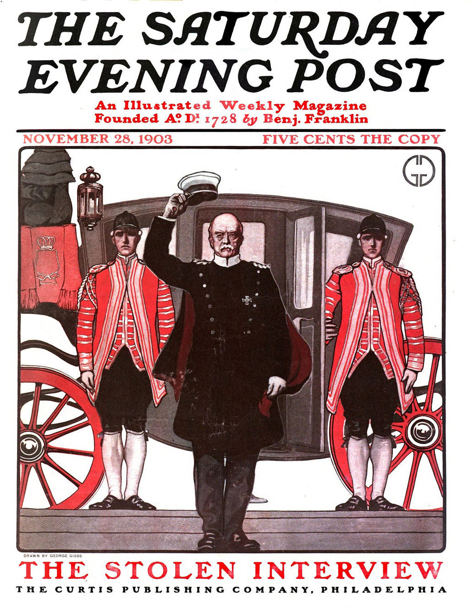

chapter16.1--handout
Background Information
Edward M. House（爱德华豪斯）
江湖人称“豪斯上校”。上面的跨界大神Wilson总统的智囊人物（brainpower），活跃于外交界，帮助起草凡尔赛和约（The Treaty of Versailles）以及国际联盟盟约（covenant of the league of nations）.后来他还成为了Franklin Roosevelt总统的智囊高参。
The Saturday Evening Post（《星期六晚邮报》）
美国一份双月刊杂志。晚邮报创刊于1897年。它的历史可以追溯到本杰明·富兰克林的殖民地报纸《宾夕法尼亚公报》。它以刊载诺曼·洛克威尔的封面和泰德·基的单版面报纸连环画《黑兹尔》最为闻名。杰克·伦敦的小说《野性的呼唤》1903年首发于《星期六晚邮报》。晚邮报内容覆盖小说、非虚构作品、漫画和特写。在20世纪20年代到20世纪60年代，它是在美国中产阶级流传最广、影响力最大的杂志之一，每周发行量能达到数百万份。

Self Reliance(《自立》)
爱默生的经典名著，基本是Emerson的金句合集啦，它号召美国人若要取得成功，不要依赖他人，而要依靠自己。每个人都有自己的天赋，只有在自己的行动中，才能发现自己，才是向世界宣布他具有怎样的价值的最好方式。也许是这种正能量的传递，也使Self Reliance成为前总统奥巴马最爱读的书。
Vocabulary
ram
这里的ram和计算机的RAM不是一个东西哈，作为动词常见的有两个意思：
💧v. force into or from an action or state
填、塞，强迫通过/接受
She rammed her mind into focus.
她逼着自己集中注意力。
（下次想说force或者push的时候，可以试试ram哦）
💧v. strike or drive against with a heavy impact
动词，撞击
Without warning, a huge bull rammed the gate.
一只巨大的公牛毫无征兆的撞击那扇门。
disorganized
💧confused, disordered，chaotic（dis-前缀表示否定，可以简单粗暴理解为organized的反义词）
紊乱的, 无组织的
💧The army is disorganized and poorly equipped to take back the north alone.
这个军队不仅无组织且装备陈旧，所以无法单独收复北境。
phenomenal
💧exceedingly or unbelievably great
极好的，现象级的（可以替换你的very good, great...等常规夸人套路）
💧The increase of sales was phenomenal.
销量明显的增加啦。
and it's a phenomenal moment in the history of the enlightenment.
这是启蒙运动的历史上的一个非凡的时刻。
rut
💧a settled and monotonous routine that is hard to escape
惯例；凹槽（掉坑里的既视感）
💧fall into a rut
落入俗套；陷入老一套；陷入陈规
💧The EC was stuck in a rut and was losing its direction.
欧洲共同体变得墨守成规，失去了方向。
trot
💧trot out
这个短语有很多意思，包括：提出…供考虑；炫耀；外出散步
💧"We don't trot out this stuff as trophies."
“我们不想对此像战利品一样炫耀。”
I was amazed to hear him trot out my suggestion as his own.
我很惊讶听到他把我的建议拿去炫耀。
Crush Your Problems
- If so, isn't it bad judgment to try to ram your opinions down the throats of other people? Isn't it wiser to make suggestions - and let the other person think out the conclusion?
如果这样的话，难道试图去把自己的观点强灌输给别人不是很失策的吗？难道试着去建议，让别人主动思考得出结论不是更明智吗？
💧直击灵魂的反问句，当你想要表达强调意味，或者想唤起共鸣的时候，反问句是个很好的套路：
isn't it bad...？ Isn't it wiser...？
难道...不是吗？
e.g.Isn't it unwise to take action without any research？
Isn't it brilliant to have a vacation together?
任何你需要的地方，可以灵活运用哦～
- Adolph Seltz suddenly found himself confronted with the necessity of injecting enthusiasm into a discouraged and disorganized group of automobile salespeople.
Adolph突然发现自己必须要做一件事：去激励一群士气低迷、组织混乱的汽车销售员们。
💧confront with the necessity of...
必须要... 比起单独说must，这个表达是不是棒棒哒～
e.g.Now we are confronted with the necessity of change.
我们现在面临必须改革的关头。
💧inject enthusiasm into...
激励，激发
可用来替换写作中常用的encourage，比如：
My history teacher encouraged me to learn art history.
Na...你可以改成这样：
My history teacher injected enthusiasm for art history into my heart.
(感觉高级的气息扑面而来了吗？）
- He was too adroit for that. He didn't care about credit. He wanted results.
他很精明的不会做那种事，他不在乎是不是被人抢风头，他是结果导向。
💧这个句子给了我一个小小的思考：
有时候我们可能很在意一些细节，比如一件事情谁付出了多少，反而忽视了最后的结果，而其实真正重要的是最重我们是否达到了目标，或者说对得起初心，不是吗？
💧PS：试一下可以把这三个句子合成为一个长句吗？
我是这样改的：
He was too adroit to care about credit, for he wanted results instead.
大家也来试试吧～（做这种句子paraphrase的练习是很锻炼语言能力的吼）
Content Analysis
这一个chapter中，卡叔给我们讲到了How To Get Cooperation，整个论述的开头，以一系列引人思考的问题切入主题：比起别人传递给你的想法，你难道不是更坚信自己的发现的想法吗？相信很多人都是如此（have much more faith in ideas that you discover for yourself），所以推己及人，想去把自己的想法强加给别人，不如去给出suggestions，让他人自发的得出结论。
（Let the other person think out the conclusion.)
为了支持自己的结论，卡叔开始引入了Adolph Seltz的例子，这位销售经理发现自己的团队急需提升士气，他紧急召开会议，鼓励大家畅所欲言，说明他们想要什么；
（urged his people to tell him exactly what they expected from him）
进而，他同意了salespeople的要求，同时也换回了一系列包括忠诚、积极、团队协作等良性反馈：
loyalty, honesty, initiative, optimism, teamwork, eight hours a day of enthusiastic work.
最终Adolph得到了极好的销售成绩反馈。
（The increase of sales was phenomenal.）
因此，卡叔强调了自己的立场：没有人喜欢被指挥去做事情（being sold some-thing or told to do a thing），我们更喜欢去实现自己的想法（acting on our own ideas）.
之后，卡叔又给我们分享了Eugene Wesson的例子，这位小哥哥给人家画稿子，被拒绝了150多次后，终于意识到自己好像掉坑里了（Wesson realized he must be in a mental rut），之后想出了一个办法，就是带着半成品去找甲方，让甲方提出自己的想法，在根据甲方的意见做过修改之后，最后的结果自然是All accepted～
Emerson大大对这个道理的概括很精辟： "In every work of genius we recognize our own rejected thoughts; they come back to us with a certain alienated majesty." （在每一件天才的作品中，我们都会发现自己被拒绝的想法；而它们却作为某种离经叛道的/异化的/不同的权威回到我们身边。）
Colonel House（豪斯上校）很好的践行了这个方式，当Wilson总统对外讲House的想法时，Colonel House并没有打断他让Wilson尴尬，而是让他觉得想法确实是他的。 （He let Wilson continue to feel that the idea was his.）
卡叔自己在准备去Canada的旅行时，也遇到了类似的有趣案例，在卡叔被各种宣传材料搞得晕头转向的时候，一个聪明的camp owner给卡叔发了一系列常驻纽约的老用户名单和联系方式（多么好的顾客证言...），卡叔在其中发现了自己的朋友，一个电话过去之后就直接决定了这家camp...
所以，正如老子所言：江海所以能为百谷王者，以其善下之，故能为百谷王。是以圣人欲上民，必以言下之；欲先民，必以身后之。是以圣人处上而民不重，处前而民不害。是以天下乐推而不厌。以其不争，故天下莫能与之争。
"The reason why rivers and seas receive the homage of a hundred mountain streams is that they keep below them. Thus they are able to reign over all the mountain streams. So the sage, wishing to be above men, putteth himself below them; wishing to be before them, he putteth himself behind them. Thus, though his place be above men, they do not feel his weight; though his place be before them, they do not count it an injury."
（其实我觉得英文更好懂一点...）
Today's Bonus
今天的内容中，卡叔说到了自己想去加拿大New Brunswick省去fishing和canoeing的事情（没想到你还是运动款的卡叔...），我们之前的认知中，美国可能是篮球的天堂，欧洲是足球的世界，其实除了主流球类运动之外，欧美有很多其他流行的运动，下面一起看看吧～
🚣Canoeing
皮划艇
卡叔去加拿大玩儿的canoeing皮划艇，在我们看来可能是一个奥运会上才出现的项目，但是在北美，canoeing是一个蛮日常的水上运动，美国一些大学有自己的canoeing team，甚至有人总结了7 CANADIAN CANOE TRIPS THAT SHOULD BE ON YOUR BUCKET LIST.
（Bucket list是遗愿清单，说什么东西on my bucket list，就是说这个东西是我人生中一定要做的事情）
加拿大的吉祥物总理小土豆（Justin Trudeau)，也曾经在尼亚加拉河（Niagara River，就是横跨美国加拿大的尼亚加拉瀑布Niagara Fall所在的的那个河）上秀皮划艇技术，庆祝世界环境日（World Environment Day）.
⚾️Baseball（棒球）
爱看NBA（National Basketball Association，美国职业篮球联赛）的同学们是否觉得basketball是美国的国球呢？然而并不，美国真正的国球是baseball，是一种“全民娱乐”（nationalpastime，这是1856年由美国水星棒球队发明的词语），其联赛MLB（Major League Baseball），在美国也有深远的影响。日本的甲子园、台湾的职业少棒，能想到的棒球icon大都是受到美国的影响。
这个帽子眼熟吗？这是纽约Yankees棒球队的标志哈～
说过了NBA和MLB，该提一下北美四大职业体育联盟啦～
💧NFL（National Football League，美式橄榄球联盟）
💧MLB（Major League Baseball，美国职业棒球大联盟）
💧NBA（National Basketball Association，美国职业篮球联赛）
💧NHL（National Hockey League，国家冰球联盟）
这四大联盟构成了北美最顶级的体育赛事，下面我们来了解一下另外两项运动：
🏈Football（橄榄球）
这里football不是FIFA的那个football（FIFA：国际足联，Fédération Internationale de Football Association，就是搞世界杯的那坨人），在美式英语里面，football更多是说美国的第一球类运动——橄榄球（所谓的American football美式足球），而足球是用soccer这个词，强调是英式足球。
American football在美国的普及程度是极高的，很多学校也都有自己的橄榄球队，因为橄榄球对运动员身体素质要求很高，所以玩这个运动好的高中生都是人生赢家啊，不仅会有各种迷妹迷弟，social地位特别高，在申请大学的时候也会有很大优势。
👇super bowl（超级碗）
提到NFL一定不能忽略Super Bowl呀，NFL的年度冠军赛，胜者被称为"world champions"，超级碗一般在每年1月最后一个或2月第一个星期天举行，那一天被称为超级碗星期天（Super Bowl Sunday），超级碗多年来都是全美收视率最高的电视节目，并逐渐成为美国一个非官方的全国性节日。另外，Super Bowl Sunday是美国单日食品消耗量第二高的日子，仅次于感恩节。
🏒️Hockey（冰球）
北美大部分地区（尤其是我们比较熟悉的New York，Boston，Seattle等城市）的纬度其实比我们国内大部分地区要高（纽约和沈阳基本位于一个纬度），所以也算是比较寒冷的地方啦（每年的冬天都有各种因为大学停课停工的新闻...），所以北美的冰球运动发展也是很厉害的～
⛳️Golf（高尔夫）
Golf是一项高贵优雅的绅士运动，讲究是他们的特点，进行这项运动时，不仅要注意安全，保证挥杆范围内无人站立、球不要打到别人，还要注意禁声。球员在击球时，周围要保持安静，不可有谈话声或车辆声及其它干扰球员击球的噪音。
其他欧美人士比较热衷的运动，还有很多，比如：
🎳Bowling（保龄球）
🏄surfing（冲浪）
🌊Diving（潜水）
等等等等，就不详细介绍啦～
smart word
今天感触最深的是Emerson的话：
"In every work of genius we recognize our own rejected thoughts; they come back to us with a certain alienated majesty."